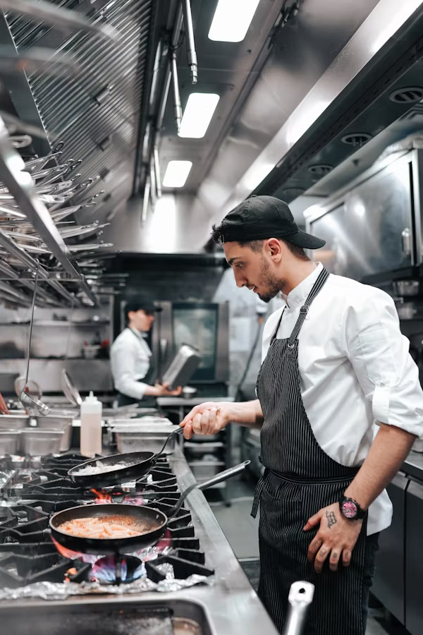
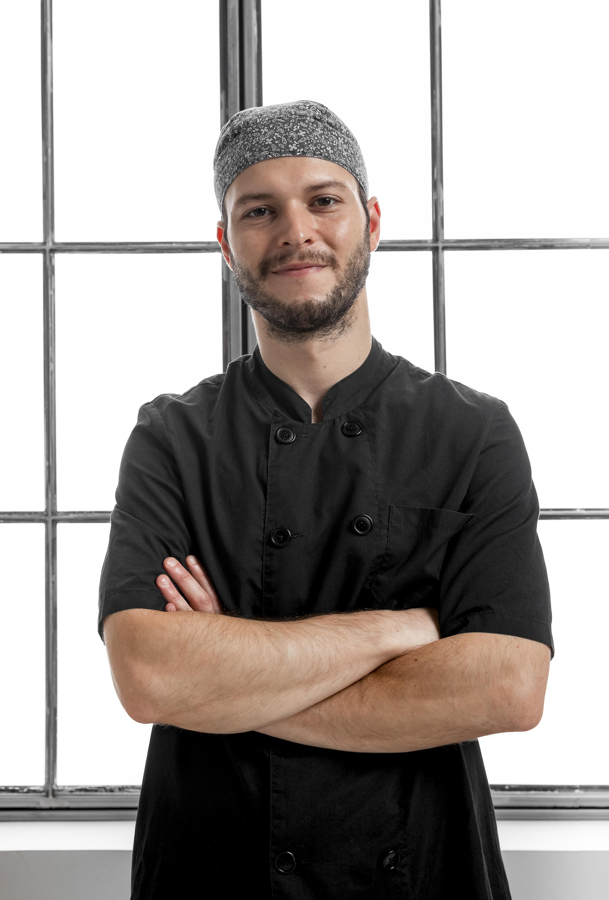

Познайомтесь з нашими шефами

Емма Річардсон
Емма Річардсон
Справжній майстер, що спеціалізується на французькій кухні з досвідом понад 15 років.

Ліам Джонсон
Ліам Джонсон
Відомий своїм знанням італійських страв і пристрастю до традиційних рецептів.

Софія Мартінез
Софія Мартінез
Шеф-кондитер, відомий своїми вишуканими десертами та інноваційними солодощами.

Джеймс Вілсон
Джеймс Вілсон
Експерт з грилю, який створює ідеальне поєднання димних смаків у кожній страві.

Олівія Беннетт
Олівія Беннетт
Спеціаліст з морепродуктів, який готує свіжі та ароматні страви, натхненні океаном.

Деніел Картер
Деніел Картер
Шеф-кухар ф’южн, який поєднує смаки різних культур в одній гармонійній тарілці.